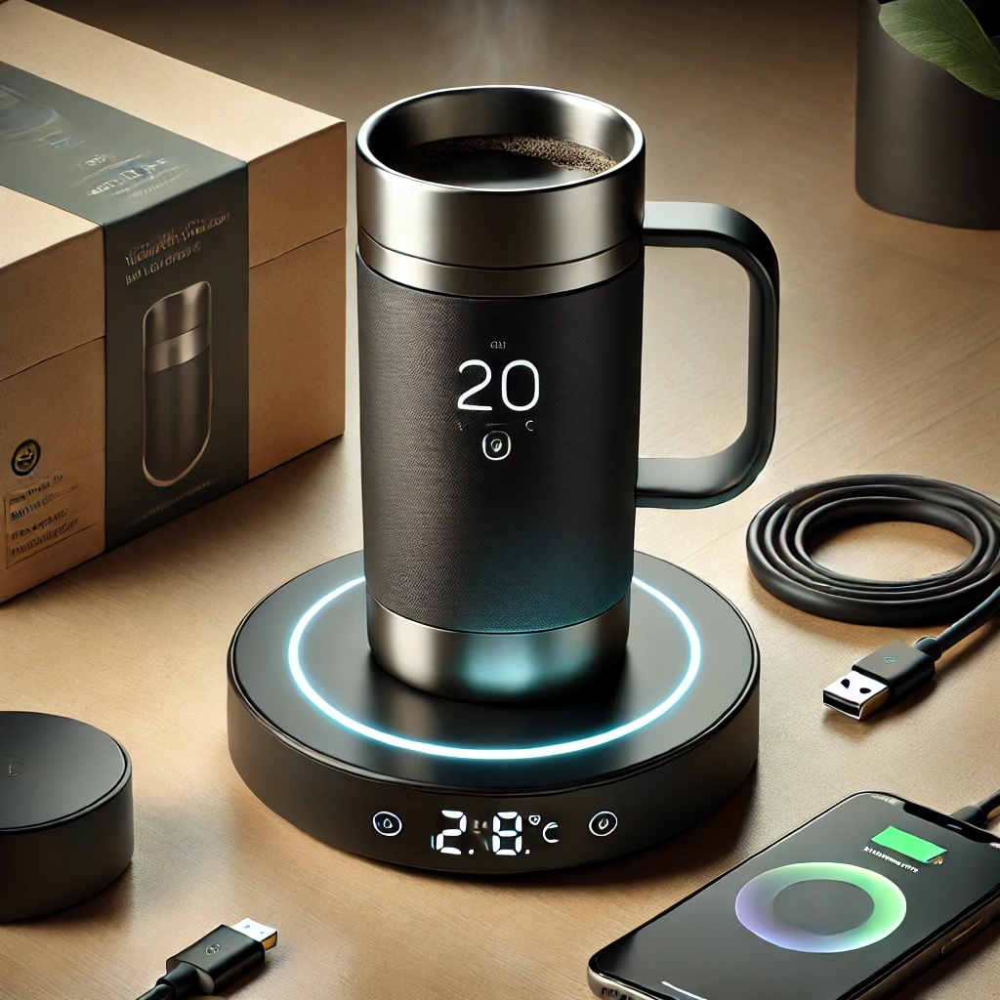

EcoTherm Smart Mug
Twój napój, idealna temperatura, zawsze i wszędzie!
EcoTherm Smart Mug to rewolucyjny, inteligentny kubek termiczny, który utrzymuje Twoje napoje w idealnej temperaturze przez cały dzień. Niezależnie od tego, czy jesteś w biurze, w podróży, czy na świeżym powietrzu, nasz kubek dba o to, by Twój napój był zawsze tak ciepły lub zimny, jak sobie życzysz.